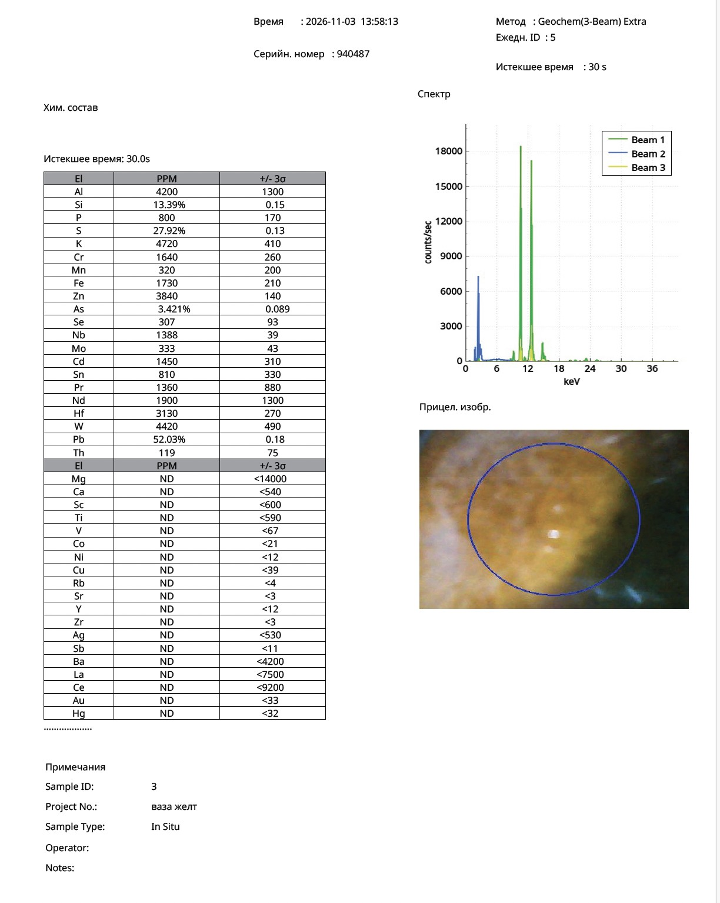

Research Article · Reference Object ro-ming-030
A Yellow-Green Vase with Handles Attributed to the Hongzhi Period: Results of Portable XRF Analysis
Nona Dronova — Zenodo, 4 November 2026 — Ming Hongzhi Yellow and Green Lead Glazes · pXRF
Abstract
Portable X-ray fluorescence (pXRF) analysis of the yellow ground and green area of a handled vase attributed to the Hongzhi period (1488–1505) revealed no reliable markers of modern manufacturing technology after spectral artefacts associated with the high-lead matrix had been excluded. Both glazes are high-lead compositions (Pb: 49.40 and 52.03 wt.% as reported by the instrument in elemental mode). The green coloration is copper-based (Cu: 4,280 ppm). Antimony, zirconium, vanadium, and titanium were not detected. These findings exclude lead-antimonate yellows associated with the Qing dynasty and early Republican-period imitations, as well as industrial zircon- and rutile-based pigments.
The readings for Cd, Sn, S, As, Zn, Se, Mo, Nb, Hf, and W are interpreted as known artefacts of portable XRF analysis, including pulse pile-up peaks generated by lead, overlap of Pb Lα and As Kα lines, and interference between Pb M and S Kα lines. Two issues remain unresolved: the unexpectedly low iron content in the yellow glaze (Fe: 1,730 ppm, compared with published values of 1.81–4.87 wt.% Fe₂O₃ for Ming yellow glazes) and the chromium reading (approximately 1,600 ppm). A programme of further investigation is proposed.
The analytical results are consistent with the attribution but do not independently establish it.
Keywords: Ming dynasty; Hongzhi period; Jingdezhen; lead yellow glaze; copper green glaze; portable X-ray fluorescence; pulse pile-up; spectral interference; attribution.
1. Introduction
Ming imperial yellow is a low-melting, high-lead glaze coloured with iron. The Hongzhi period is regarded as the peak of this technological tradition, particularly in the production of the characteristic so-called chicken-fat yellow (娇黄).
- Colourant. According to EDXRF, Raman spectroscopy, and XPS analyses of eleven samples from the imperial kilns of Jingdezhen, the colourant in Ming yellow glaze is Fe₂O₃ dissolved in a lead-glass matrix, with concentrations ranging from 1.81 to 4.87 wt.% (Hao et al., 2024). Historical Ming recipes used lead, quartz, and ochre, or what was described as "pure iron red".
- Layer structure. A transparent high-temperature layer, 150–450 μm thick and containing numerous bubbles, separates the coloured lead glaze from the body of imperial yellow porcelain. In architectural tiles, by contrast, the lead glaze was applied directly to the ceramic body (Hou et al., 2022). A slip layer has also been reported in Chenghua-, Hongzhi-, and Zhengde-period examples (Zheng, Wu, Wu, 2008).
- Later yellow glazes. In early Republican-period imitations, yellow coloration was produced using antimony and tin (the phase Pb₂Fe₀.₅Sb₁.₅O₆.₅; Zheng, Wu, Wu, 2008). From the late Kangxi era onwards, lead-antimonate and lead-tin yellows became part of the glaze palette. Industrial twentieth-century yellows were based on zircon (Zr–Pr, Zr–V), rutile (Ti–Sb–Ni/Cr), cadmium, or chromium compounds.
- Green glaze. Ming low-temperature green glaze was coloured with copper in a lead-rich matrix.
The aim of this study is to compare the pXRF readings obtained from the vase with these technological criteria, first distinguishing genuine elemental signals from artefacts associated with a high-lead matrix.
2. Object and Provenance
The object under examination is a porcelain vase with handles, covered with a yellow lead glaze and green patches. Its proposed attribution is Jingdezhen, Hongzhi period (1488–1505). In the research register it is designated "Vase 3"; in the author's archive its reference is DRN-MING-YG-2025-HZ.
- Dimensions, form, and marks: [to be completed].
- Provenance (collection history, acquisition dates, publications, and auction records): [to be completed with documentary references]. Documented provenance constitutes evidence independent of the XRF results and should be supported by verifiable sources in the final publication.
- Surface condition: iridescence is visible on the yellow glaze. Close-up photographs show an ochre-yellow ground, while the green area is olive-green with dark pinpoint inclusions.
3. Materials and Methods
Measurements were performed in situ on 3 November 2026 using a portable XRF analyser (serial number 940487), without sampling or removal of material.
| Parameter | Value |
|---|---|
| Analytical mode | Geochem (3-Beam) Extra |
| Measurement time | 30 seconds per spot |
| Measurement point 1 (Daily ID 4, 13:57:13) | Green area, Sample ID 3, "Vase Green" |
| Measurement point 2 (Daily ID 5, 13:58:13) | Yellow ground, Sample ID 3, "Vase Yellow" |
The reported values are elemental concentrations calculated by the instrument's built-in algorithm. Measurement uncertainties are reported as ±3σ.
No calibration against high-lead reference standards was performed. The Geochem mode is based on a light silicate matrix model and is not designed for glasses containing approximately 50% lead. Consequently, absolute concentration values are interpreted as semi-quantitative.
The reliability of each elemental reading was assessed by examining peak positions in the spectra and comparing the results with other high-lead glazes analysed during the same measurement series, including a yellow vase designated CHENGHUA-YEL-001 (Pb: 48.97%).
4. Results
Both measurement points correspond to high-lead glazes. The green area differs from the yellow ground primarily in its copper content; most other readings are similar.
Table 1. Instrument readings (ppm unless otherwise indicated; ±3σ) and assessment of reliability
| Element | Green area (ID 4) | Yellow ground (ID 5) | Assessment |
|---|---|---|---|
| Pb | 49.40% ± 0.16 | 52.03% ± 0.18 | Genuine |
| Si | 14.98% ± 0.14 | 13.39% ± 0.15 | Genuine (absolute values inaccurate) |
| Cu | 4,280 ± 260 | ND (<39) | Genuine |
| K | 5,960 ± 390 | 4,720 ± 410 | Genuine, probably underestimated |
| Al | 4,100 ± 1,300 | 4,200 ± 1,300 | Genuine, inaccurate |
| Fe | 1,500 ± 200 | 1,730 ± 210 | Genuine, probably underestimated (Section 7) |
| P | 670 ± 160 | 800 ± 170 | Genuine |
| Mn | 260 ± 200 | 320 ± 200 | At detection limit |
| Ca | 370 ± 270 | ND (<540) | Low |
| Cr | 1,540 ± 250 | 1,640 ± 260 | Unresolved (Section 7) |
| As | 3.234% | 3.421% | Predominantly artefactual (Section 5) |
| S | 28.93% | 27.92% | Artefact |
| Cd | 1,420 ± 300 | 1,450 ± 310 | Artefact |
| Sn | 960 ± 330 | 810 ± 330 | Artefact |
| Zn | 3,670 ± 140 | 3,840 ± 140 | Probably artefactual |
| Se | 256 ± 88 | 307 ± 93 | Probably artefactual |
| Nb / Mo / Hf / W | 1,274 / 296 / 2,990 / 4,340 | 1,388 / 333 / 3,130 / 4,420 | Artefacts |
| Pr / Nd | ND | 1,360 ± 880 / 1,900 ± 1,300 | Artefacts (uncertainties comparable to measured values) |
| Sb | ND (<12) | ND (<11) | Not detected |
| Zr | ND (<3) | ND (<3) | Not detected |
| Ti | ND (<530) | ND (<590) | Not detected |
| V | ND (<66) | ND (<67) | Not detected |
| Co / Ni | ND (<21 / <11) | ND (<21 / <12) | Not detected |
Converted to oxide equivalents, the readings correspond to approximately 53% PbO in the green glaze and 56% PbO in the yellow glaze, approximately 0.54% CuO in the green area, and approximately 0.21–0.25% Fe₂O₃.
The spectra from both measurement points are dominated by Pb Lα (overlapping with As Kα) and Pb Lβ peaks, with intensities of approximately 17,000–21,000 counts per second, together with a Pb M peak in the low-energy beam at approximately 7,500–8,500 counts per second.
5. Spectral Artefacts Associated with the High-Lead Matrix
All apparently modern elemental readings in Table 1, with the exception of chromium, can be explained by known artefacts of portable XRF analysis in materials containing approximately 50% lead.
5.1. Lead Pulse Pile-Up Peaks: Cd and Sn
At high count rates, two photons originating from lead may be registered as a single event with their combined energy. Methodological literature describes the following coincidences: Pb Lα + Pb Lα = 21.0 keV (Pd Kα), Pb Lα + Pb Lβ = 23.1 keV (Cd Kα at 23.2 keV), and Pb Lβ + Pb Lβ = 25.2 keV (Sn Kα). These peaks disappear when the X-ray tube current is reduced (Lee, 2016; WAAC, 2009).
The spectra of the high-lead glazes examined in this series display precisely this triplet of peaks, at approximately 21.1, 23.2, and 25.3 keV, with the middle peak having the greatest intensity.
Internal confirmation is provided by measurements of three different glazes containing approximately 50% Pb: their Cd readings are almost identical (1,420, 1,450, and 1,420 ppm). By contrast, cadmium was not detected in a glaze containing 7.4% Pb (below 19 ppm).
5.2. False Sulphur Signal
The Pb Mα line (2.35 keV) almost coincides with the S Kα line (2.31 keV).
A direct methodological analogue is provided by the analysis of high-lead Corning C reference glass, in which portable XRF incorrectly reported approximately 30 wt.% SO₃, while light elements were underestimated. The sulphur readings of 27.9–28.9% obtained from the vase are consistent with the same effect.
Some sulphur may nevertheless be genuinely present: lead sulphate has been described as a corrosion product of lead-glazed ceramics (Duan Hongying et al., 2013).
5.3. Arsenic
The Pb Lα line (10.55 keV) and As Kα line (10.54 keV) cannot be distinguished spectrally. The instrument manufacturer compensates for the lead contribution using the Pb Lβ line; at high lead concentrations, any inaccuracy in this model can produce a false arsenic signal (Rowe et al., 2015).
Within the present measurement series, the As/Pb ratio is identical in three different glazes containing approximately 50% Pb: 0.065 (green), 0.066 (yellow), and 0.066 (CHENGHUA-YEL-001). This strongly suggests an artefact proportional to the lead content. For comparison, low-lead glazes from the same series have As/Pb ratios of 0.2–0.26.
5.4. Other Lead-Related Artefacts
Zn, Se, Mo, Nb, Hf, W, and Pr/Nd readings are consistently reproduced in all three glazes containing approximately 50% Pb and are explained by escape and sum peaks associated with Pb and As.
The presence of hafnium in the absence of detectable zirconium (below 3 ppm) is physically implausible for a genuine material composition.
Research on lead-rich glass tesserae has demonstrated that portable XRF may substantially overestimate or underestimate trace elements in high-lead materials and therefore requires dedicated calibration.
6. Features Consistent with Ming Technology
After excluding the spectral artefacts, the chemical profile of the vase contains no reliable markers of later or industrial technology and is consistent with the Ming system of low-temperature lead glazes.
Table 2. Evaluation of markers associated with later yellow and green pigments
| Colourant type | Period of use | Diagnostic marker | Result | Conclusion |
|---|---|---|---|---|
| Antimony-tin yellow | Early Republican period | Sb | ND (<11) | Excluded |
| Lead-antimonate (Neapolitan) yellow | From the late Kangxi period | Sb | ND (<11) | Excluded |
| Praseodymium-zircon yellow | 20th century | Zr | ND (<3) | Excluded |
| Vanadium-zircon yellow and turquoise | 20th century | V, Zr | ND (<67; <3) | Excluded |
| Rutile yellows (Ti–Sb–Ni/Cr) | 20th century | Ti, Sb | ND (<590; <11) | Excluded |
| Cadmium yellow | From the 19th century | Cd | Pulse pile-up artefact (5.1) | Not confirmed |
| Cobalt and chromium-cobalt pigments | — | Co | ND (<21) | Excluded |
| Chromium yellow/green | From the 19th century | Cr | 1,540–1,640 ppm | Unresolved (7.2) |
Positive indicators:
- High-lead, low-melting glaze. Both colours are based on high-lead compositions (instrument readings equivalent to approximately 53–56% PbO), consistent with the PbO–SiO₂–K₂O system associated with Ming imperial yellow glazes.
- Copper-based green. The green area is coloured by copper (approximately 0.5% CuO) in a lead-rich matrix, characteristic of Ming low-temperature green glaze. Copper is absent from the yellow ground (below 39 ppm), demonstrating a clear separation between the two colour systems.
- The "green over yellow" structure. Fe, Cr, K, P, and Pb concentrations in the green area are close to those in the yellow ground, while copper is additionally present. This is consistent with the application of a copper-based green glaze over an existing yellow glaze.
- Absence of Sb. The lack of detectable antimony excludes Qing-period foreign-derived yellows and the documented early Republican recipe used to imitate early Ming yellow glazes (Zheng, Wu, Wu, 2008).
- Absence of Zr, V, and Ti. These results exclude industrial zircon- and rutile-based pigments, as well as zircon-based opacifiers. Such materials were detected in two demonstrably modern objects analysed within the same measurement series, with Zr concentrations of 0.6–1.2%.
- Surface leaching. Low K (0.47–0.60%) and Ca concentrations, combined with high Pb content and visually observed iridescence, are consistent with long-term weathering of a lead glaze. However, microscopic examination is required to confirm the natural origin of the iridescence.
7. Unresolved Questions
Two readings currently prevent the analytical agreement with Ming technology from being treated as conclusive evidence for the attribution.
7.1. Iron Content in the Yellow Glaze
The Fe reading of 1,730 ppm corresponds to approximately 0.25% Fe₂O₃, which is 7–20 times lower than the published range for Ming yellow glazes (1.81–4.87%).
The Fe Kα line (6.40 keV) does not coincide with lead lines; therefore, the low reading cannot be explained by a lead pulse pile-up artefact.
Possible explanations for the underestimation include:
- In a glass containing approximately 50% PbO, the Fe Kα signal may originate only from the uppermost approximately 10–20 μm. A leached iridescent surface layer of comparable thickness could substantially reduce the measured iron concentration.
- The instrument's matrix model is inappropriate, as indicated by the erroneous sulphur reading of approximately 28%. Consequently, absorption corrections may be distorted.
- Imperfect measurement geometry on the curved surface may contribute to the discrepancy.
Each factor would normally produce an error ranging from several tens of percent to approximately two- or threefold. Explaining a discrepancy of 7–20 times would require a combination of these effects. The magnitude of the underestimation must be measured using a reference standard rather than assumed.
Visually, the yellow glaze has an ochre-like appearance, characteristic of iron-based colourants.
7.2. Chromium
Chromium readings of approximately 1,540–1,640 ppm, with a Cr/Fe ratio close to 1, cannot readily be explained by natural impurities in ochre or sand.
In historical lead glazes, chromium is generally reported as a trace impurity associated with raw materials such as chromite (Shen et al., 2019). Even iron ores rich in chromium typically exhibit Cr/Fe ratios of approximately 0.05.
Chromium concentrations are almost identical in the yellow and green measurement points and therefore cannot be considered the green colourant.
Two explanations remain possible:
- A modern chromium-based pigment in the yellow glaze. This is the only later yellow pigment type not excluded by Table 2.
- An instrumental artefact. A possible explanation is a sum peak involving the intense Pb M line (approximately 2.35 keV) and scattered Rh L tube lines (approximately 2.7–3.0 keV), potentially producing an apparent signal in the region assigned to Cr Kα (5.41 keV). This is the author's hypothesis; no direct published confirmation has been identified.
Indirect support for the artefact hypothesis comes from the fact that chromium was not detected in lead-free Jingdezhen glazes analysed within the same measurement series.
The distinguishing criterion is spectral: genuine chromium should produce both Kα (5.41 keV) and Kβ (5.95 keV) peaks. A false sum peak would not produce the corresponding Kβ signal and should decrease disproportionately when the tube current is reduced.
8. Proposed Verification Programme
The unresolved questions can be investigated using non-destructive methods during a single laboratory session.
| Step | Examination | Expected result if the Ming attribution is correct |
|---|---|---|
| 1 | Repeat XRF analysis in a mode designed for heavy matrices (Mining/Alloy), with tube current reduced by a factor of 3–4, measurement time of 90–120 seconds, three spots, and a cleaned surface | Cd, Sn, and As signals disappear; chromium falls below the detection limit |
| 2 | Examination of raw spectra for the presence of Cr Kβ (5.95 keV) | Absence of Kβ indicates a false chromium signal |
| 3 | Reference measurement using an authentic Ming yellow-glazed sherd or lead glass with a known Fe concentration under identical conditions | The instrument underestimates Fe in the reference to a comparable degree |
| 4 | Measurement on an area with weaker iridescence or on a fresh microscopic chip | Fe and K readings increase |
| 5 | Analysis of the unglazed ceramic body and base | Jingdezhen porcelain stone and kaolin characteristics (high Rb/Sr, low Ti) |
| 6 | Microscopic examination of iridescence and glaze layers, with yellow and green areas examined separately | Iridescence is uneven and more pronounced in cracks and bubbles; the green and yellow layers show different weathering patterns |
| 7 | If available, Raman spectroscopy and LIBS | Iron-based colourant; absence of chromates |
If steps 1–3 confirm the proposed interpretation, the list of unresolved questions will be reduced to zero, allowing the chemical evidence to be presented as supporting the Hongzhi-period attribution in conjunction with provenance and stylistic analysis.
9. Conclusion
Portable XRF analysis of the yellow-green handled vase revealed a high-lead yellow glaze and a copper-based green glaze, with no detectable antimony, zirconium, vanadium, titanium, or cobalt.
These findings exclude Qing-period and early Republican antimony-based yellows, as well as twentieth-century industrial pigments based on zircon and rutile.
The cadmium, tin, arsenic, and sulphur readings are explained by documented portable XRF artefacts associated with high-lead matrices.
The vase's chemical profile is therefore consistent with the Ming technological tradition of low-melting lead glazes and contains no reliable markers of modern manufacture.
Two readings must nevertheless be resolved before the XRF results can be considered confirmatory evidence for a Hongzhi-period attribution: the unexpectedly low iron content in the yellow glaze (possibly caused by surface leaching and an inappropriate matrix model) and the chromium signal of approximately 1,600 ppm (which may represent either a modern pigment or an instrumental artefact). Both questions can be investigated non-destructively using the programme described in Section 8.
From a methodological perspective, this study demonstrates that portable XRF readings obtained in Geochem mode from high-lead glazes cannot be used for attribution without examination of the underlying spectra. In this case, an uncritical interpretation of the instrument's table — for example, accepting a cadmium reading of 1,450 ppm as genuine — would have led to the erroneous conclusion that the object contained modern cadmium yellow.
Original pXRF Protocols
Portable XRF analyser, serial no. 940487 — 3 November 2026

Fig. 2. Measurement ID 5 — yellow ground. Click to open full size.
References
-
Hao, M., Zhang, M., Weng, Y., & Xiong, Z. (2024). Chromogenic mechanisms of overglaze yellow pigment produced in Jingdezhen imperial kilns during the Ming dynasty. Heritage Science. https://doi.org/10.1186/s40494-024-01458-0
-
Hou, J. Y., Li, H., Kang, B. Q., Wood, N., Wang, G. Y., Jiang, J. X., Wang, Z. Y., & Zou, F. A. (2022). The origins of imperial yellow glazed porcelain in the Ming Dynasty (1368 to 1644) China: Technical comparison to low-fired tile with yellow glaze. Archaeometry, 64(1), 59–70. https://doi.org/10.1111/arcm.12692
-
Zheng, Nai-zhang, Wu, Jun-ming, & Wu, Juan. (2008). Preliminary Studies of Jingdezhen's Low Temperature Yellow-Glaze from Ming and Qing Dynasty. Journal of Building Materials. https://www.semanticscholar.org/paper/Preliminary-Studies-of-Jingdezhen's-Low-Temperature-Nai-zhang-Jun-ming/bb052549e80a745a622c772ed36e21c76576f5e9
-
明初琉璃技术的传承与发展 [The transmission and development of glazed ceramic technology in the early Ming period]. Discussion of the work by Hou et al. (2022). http://sanyamuseum.com/a/3/2022/0307/721.html
-
Shen, J. Y., Henderson, J., Evans, J., Chenery, S., & Zhao, F. Y. (2019). A study of the glazing techniques and provenances of Tang sancai glazes using elemental and lead isotope analyses. Archaeometry, 61, 358–373. https://doi.org/10.1111/arcm.12436
-
Duan, Hongying, Miao, Jianmin, Li, Yuan, Kang, Baoqiang, & Li, He. (2013). 我国古代建筑绿色琉璃构件病害的分析研究 [Analysis of deterioration in green glazed architectural components in ancient Chinese buildings]. Palace Museum Journal, No. 2. https://www.dpm.org.cn/Uploads/File/2018/06/05/u5b1657956a852.pdf
-
Lee, L. (2016). XRF in Cultural Heritage. IIC-ITCC lecture. https://www.iiconservation.org/sites/default/files/news/attachments/7826-iic-itcc_2016_lecture_lynn_lee_xrf.pdf
-
WAAC Newsletter. (2009). Vol. 31(3): Handheld XRF spectral interpretation. https://cool.culturalheritage.org/waac/wn/wn31/wn31-3/wn31-303.pdf
-
Rowe, M. W., Cole, S. J., & Yousuf, M. (2015). pXRF Analysis of Arsenic When Lead Is Present: A Cautionary Tale. ACS Symposium Series. https://nmarchaeology.org/assets/images/pdf_files/2015%20American%20Chemical%20Society-pXRF.pdf
-
Olympus/Evident. XRF Technology for Analysis of Arsenic and Lead in Soil. Application note. https://olympus-ims.com/applications/xrf-technology-analysis-arsenic-lead-soil
-
Comparison of pXRF and LA-ICP-MS analysis of lead-rich glass mosaic tesserae. https://hal.archives-ouvertes.fr/hal-02967327
-
Supplementary analytical appendix: pXRF of lead-rich glass (Corning C, SO₃ error). https://static-cambridge-org.ezproxyberklee.flo.org/content/id/urn:cambridge.org:id:article:S0003581521000378/resource/name/S0003581521000378sup001.docx
-
Dronova, N. Scientific Authentication of a Yellow-Green Lead Glazed Vase Attributed to the Hongzhi Period (1488–1505) of the Ming Dynasty. Zenodo. https://zenodo.org/records/16754235. Previous study of the object; the Fe₂O₃ estimate of approximately 4.5% presented there was based on visual assessment and has not yet been confirmed by the present XRF analysis.
-
Portable XRF analytical report, "Chemical Composition", instrument No. 940487, 3 November 2026, measurements Nos. 4 and 5 (Sample ID 3).
Suggested Citation
Dronova, N. (2026). A Yellow-Green Vase with Handles Attributed to the Hongzhi Period: Results of Portable XRF Analysis. Zenodo. Published 4 November 2026.